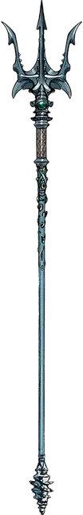

Топитель
Drown
Оружие (трезубец), легендарное (требуется настройка)

Рекомендованная стоимость от 50 001 зм
Топитель — это стальной трезубец, содержащий в себе частичку силы Ольгидры, Принцессы Злой Воды. Верхняя часть его древка украшена бронзовыми ракушками, на конце рукояти красуется серебряная раковина, а чуть ниже острия видна вставленная внутрь зеленоватая жемчужина. Если трезубец бросить в воду, то он останется лежать на её поверхности, а если его выпустить из рук под водой, то он не пойдёт ко дну, а зависнет на месте.
Трезубец всегда холоден на ощупь, и его не портит даже длительное нахождение в воде.
Вы получаете +1 к броскам атаки и урона этим магическим оружием. При попадании цель получает дополнительный урон холодом 1к8.
Власть над водой. Если вы вооружены Топителем, то получаете следующие преимущества:
- Вы свободно говорите на Акване.
- Вы обладаете сопротивление урону холодом.
- Вы можете наложить заклинание подчинение чудовища [dominate monster] (спасбросок Сл 17) на водного элементаля [water elemental]. Если вы наложили это заклинание, то не сможете вновь использовать данное свойство до следующего рассвета.
Слёзы бесконечных страданий. Находясь в элементальном узле воды, вы, с помощью Топителя, можете совершить ритуал под названием «Слезы бесконечных страданий», который позволит вам создать водную сферу опустошения [devastation orb of water] (см. описание сфер опустошения для информации о времени и стоимости ритуала). После окончания ритуала вы не сможете повторить его до следующего рассвета.
Слабость. Топитель делает своего владельца алчным. Пока существо настроено на это оружие, оно получает следующую слабость: «Я по праву требую самую большую долю добычи и отказываюсь расстаться со всем, что принадлежит мне».
Кроме того, если вы настроены на Топитель в течение 24 часов подряд, на вашей коже начинают расти ракушки. Они могут быть удалены с помощью заклинания высшее восстановление» [greater restoration] или аналогичной магии, но не тогда, когда вы настроены на это оружие.